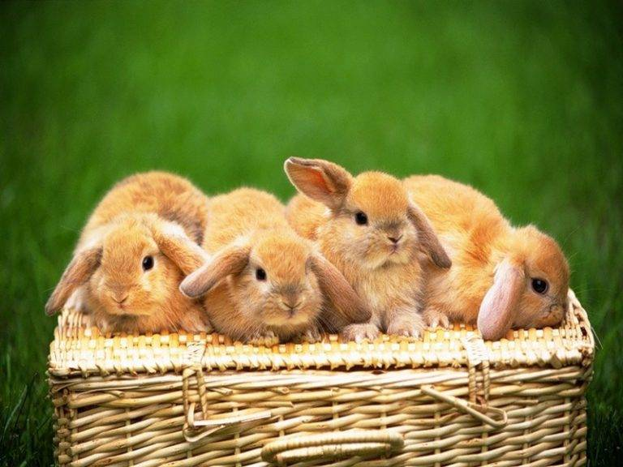

Мир кроликов
Описание
Породы
Уход
Питание
Факты
Обо мне
Обо мне
Я - Резниченко Анастасия, учусь в 9Б.
Я создала этот сайт, потому что я люблю кроликов и увлекаюсь программированием.
Надеюсь, информация представленная на сайте будет вам полезна и интересна.
Я пользовалась следующими источниками:
https://nashzeleniymir.ru/#porody-krolikov-s-fotografiyami-i-nazvaniyami.
https://agronomu.com/bok/7699-lvinogolovyy-krolik-opisanie-porody-harakter-osobennosti-soderzhaniya.html
